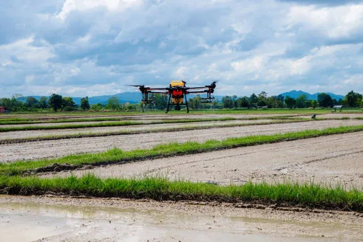
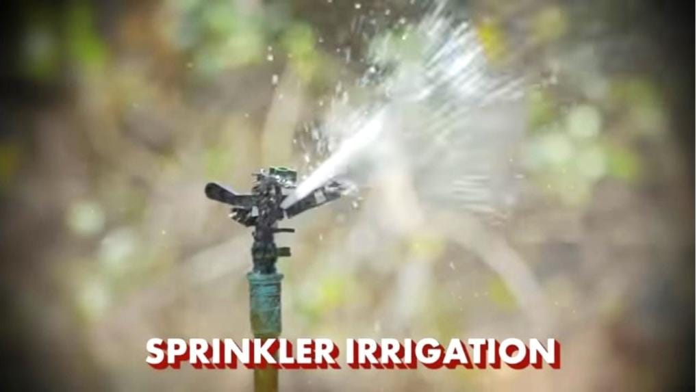

Farming Technology

Drone Technology
Monitor crops and manage fields more efficiently with drones, reducing manual labor and improving yield.
Read More
Smart Irrigation
Use sensor-based irrigation systems to manage water use efficiently and avoid wastage in the farming process.
Read More

Sprinkler Irrigation
Sprinkler irrigation distributes water evenly over crops by spraying it through the air, mimicking natural rainfall.
Read More